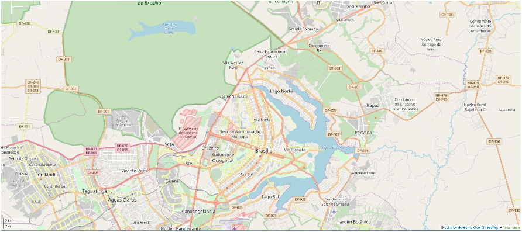

Author : Matheus Willian Machado
Date : February 20, 2018
Choose any area of the world in https://www.openstreetmap.org and use data munging techniques, such as assessing the quality of the data for validity, accuracy, completeness, consistency and uniformity, to clean the OpenStreetMap data for a part of the world that you care about.
Choose to learn SQL or MongoDB and apply your chosen schema to the project.

Area: Federal District, Brazil
URL: https://overpass-api.de/api/map?bbox=-48.1479,-15.9003,-47.6089,-15.5996
Motivation : Area around my hometown (Brasilia).
File Name : area.osm.
File Size : 82,1 MB.
For the OpenStreetMap file:
The first step was to download the XML file from the URL, referring to the Area.
After downloading the file, its structure was investigated.
The file contains the following first level elements:
First Level Elements
{'bounds': 1,
'meta': 1,
'node': 350669,
'note': 1,
'relation': 867,
'way': 74821
}
For each element, attributes and sub-elements (children) were studied.
Children and Attributes:
{'bounds': {'attributes': ['minlat', 'minlon', 'maxlat', 'maxlon'], 'children': {}},
'meta': {'attributes': ['osm_base'], 'children': {}},
'node': {'attributes': ['id','lat','lon','version','timestamp','changeset','uid','user'],
'children': {'tag': {'attributes': ['k', 'v'],
'children': {}
}
}
},
'note': {'attributes': [], 'children': {}},
'relation': {'attributes': ['id','version','timestamp','changeset','uid','user'],
'children': {'member': {'attributes': ['type', 'ref', 'role'],
'children': {}
},
'tag': {'attributes': ['k', 'v'],
'children': {}
}
}
},
'way': {'attributes': ['id', 'version', 'timestamp', 'changeset', 'uid', 'user'],
'children': {'nd': {'attributes': ['ref'],
'children': {}
},
'tag': {'attributes': ['k', 'v'],
'children': {}
}
}
}
}
It was decided to remove elements that appears just once, as they won't be part of the analysis.
And for a better looking at the data, a sample of each tag was created at the proportion of one per hundred records.
Sample Files
For the main elements:
On the second step, all attributes were tested according to the "data_types".
The data_types is a python dictionary that maps the attribute with its type.
To "int", "float" and "timestamp" fields conversion commands were applied.
For "string" fields, special characters were searched and shown.
"Unaudited" fields were skipped by the audit because they are free writing fields.
Data Types
{'int':['id','version','changeset','uid','ref'],
'float':['lat','lon'],
'timestamp':['timestamp'],
'string':['type','role','k'],
'unaudited':['user','v']
}
Special chars were found in "endereço" and "currency:R$".
For the first one was chosen to change it to "addr:street",
for the other one to drop it.
Special char ç found in : endereço
Special char $ found in : currency:R$
The "k" attribute, from the "tag" elements, had a more detailed audit.
They were classified and counted according to the following:
Tag.k Classification
Lower keys could only be formed with lowercase letters, "-" and "_".
Lower_colon keys were Lower keys with only one colon (":").
Lower_multi_colon keys were Lower keys with two or more colons.
And "other" were all the other keys that didn't match the above categories.
Tag.k Auditing
{'lower': 174753,
'lower_colon': 10727,
'lower_multi_colon': 244,
'other': [175,
{'2016olympicgames',
'3dr:type',
'Futsal',
'IBGE:CD_ADMINIS',
'IBGE:GEOCODIGO',
'ISO3166-1',
'ISO3166-1:alpha2',
'ISO3166-1:alpha3',
'ISO3166-1:numeric',
'ISO3166-2',
'building:levels_1',
'capital_ISO3166-1',
'currency:BRL',
'currency:R$',
'currency:USD',
'endereço',
'fuel:octane_80',
'fuel:octane_91',
'fuel:octane_95',
'landuse_1',
'landuse_2',
'leisure_1',
'leisure_2',
'natural_1',
'natural_2',
'ref:CNUC',
'sport_1',
'sport_2',
'sport_3',
'surface_1',
'water_1'
}
]
}
For the attributes of the tag elements:
This process was focused on the tag elements.
Based on the audit, some fields were selected for the cleaning process,
like change tag.k value "endereço" to "addr:street" and "Futsal" to "sport".
Multi_colon keys were changed to colon keys, so there would be only keys with two or less levels.
Some abbreviations on tag.v values were expanded according to the values dictionary, for a better uniformity of the data.
The values dictionary is a python dictionary that maps the abbreviation with its full name.
Values Dictionary
{'Cond.':'Condomínio ',
'Av.':'Avenida ',
'AV.':'Avenida ',
'Ed.':'Edifício ',
'ED.':'Edifício ',
'A.E.':'Área Especial ',
'Bl.':'Bloco ',
'BL.':'Bloco ',
'Qd.':'Quadra ',
'Q. ':'Quadra ',
'Conj.':'Conjunto ',
'Cj.':'Conjunto ',
'Ch.':'Chácara ',
'Lt.':'Lote '
}
All changes were shown as output, this way it was possible to validate them.
For the data:
Still part of the cleaning plan, the "other" tags were divided into three groups.
Group 1:
The group 1 was covered by the last section.
Group 2:
The group 2, which was called multi-tags because they were additional information to another tag with similar name, each of their values was concatenated to the main tag value and dropped before.
Example
<tag k="sport" v="basketball"/>
<tag k="sport_1" v="volleyball"/>
<tag k="sport_2" v="handball"/>
<tag k="sport_3" v="soccer"/>
To
{"sport": "basketball;volleyball;handball;soccer"}
Group 3:
The group 3 was dropped.
Finally, address information was shaped into a python dictionary, for a better visualization.
Example
<tag k="addr:city" v="Brasília"/>
<tag k="addr:street" v="Avenida das Castanheiras"/>
<tag k="addr:suburb" v="Águas Claras"/>
To
{"address": {"city": "Brasília",
"street": "Avenida das Castanheiras",
"suburb": "Águas Claras"
}
}
After the entire cleaning process, the data was converted from xml to json and written into a file.
File Name : area.json.
File Size : 88,5 MB.
The data into json file was imported to MongoDB with mongoimport command.
There are some queries and statistics about the dataset bellow:
Number of Documents
> db.area.aggregate({$group:{"_id":"Documents","Total":{$sum:1}}})
Output:
{ "_id" : "Documents", "Total" : 426357 }
Number of Unique Users
> db.area.aggregate({$group:{_id:"users",unique:{$addToSet:"$created.uid"}}}
,{$project:{_id:1,unique:{$size:"$unique"}}
})
Output:
{ "_id" : "users", "unique" : 699 }
Number of Node and Way
> db.area.aggregate({$match:{element:{$in:["node","way"]}}}
,{$group:{_id:"$element",count:{$sum:1}}
})
Output:
{ "_id" : "way", "count" : 74821 }
{ "_id" : "node", "count" : 350669 }
Number of Node Types
> db.area.aggregate({$match:{"element":"node"}}
,{$group:{_id:"amenity",unique:{$addToSet:"$amenity"}}}
,{$project:{_id:"amenity",unique:{$size:"$unique"}}
})
Output:
{ "_id" : "amenity", "unique" : 78 }
| File | Size |
|---|---|
| area.osm | 82,1 MB |
| area.json | 88,5 MB |
| node_sample.osm | 35,7 KB |
| way_sample.osm | 276 KB |
| relation_sample.osm | 71,4 KB |
| sample.py | 2,03 KB |
| audit.py | 2,33 KB |
| clean.py | 1,39 KB |
| xml2json.py | 3,33 KB |
Last Modify
> db.area.aggregate({$group:{_id:"Last Modify","Date":{"$max":"$created.timestamp"}}})
Output:
{ "_id" : "Last Modify", "Date" : "2018-02-02 12:56:04" }
Top 10 common amenity
> db.area.aggregate({$match:{amenity:{$exists:1}}},
{$group:{_id:"$amenity","amount":{$sum:1}}},
{$sort:{"amount":-1}}, {$limit:10})
Output:
{ "_id" : "parking", "amount" : 1436 }
{ "_id" : "restaurant", "amount" : 775 }
{ "_id" : "school", "amount" : 707 }
{ "_id" : "place_of_worship", "amount" : 364 }
{ "_id" : "fast_food", "amount" : 361 }
{ "_id" : "fuel", "amount" : 276 }
{ "_id" : "pharmacy", "amount" : 217 }
{ "_id" : "bank", "amount" : 185 }
{ "_id" : "bar", "amount" : 177 }
{ "_id" : "police", "amount" : 162 }
Top 10 sports with more places
> db.area.aggregate({$project:{sport:{$split:["$sport",";"]}}},
{$unwind:"$sport"},
{$group:{_id:"$sport","places":{$sum:1}}},
{$sort:{"places":-1}},
{$limit:10})
Output:
{ "_id" : "soccer", "places" : 207 }
{ "_id" : "tennis", "places" : 92 }
{ "_id" : "multi", "places" : 81 }
{ "_id" : "basketball", "places" : 61 }
{ "_id" : "swimming", "places" : 36 }
{ "_id" : "fitness", "places" : 33 }
{ "_id" : "volleyball", "places" : 22 }
{ "_id" : "beachvolleyball", "places" : 16 }
{ "_id" : "skateboard", "places" : 14 }
{ "_id" : "gymnastics", "places" : 12 }
Top 10 contributors
> db.area.aggregate({$group:{_id:"$created.user","contributions":{$sum:1}}},
{$sort:{"contributions":-1}},
{$limit:10})
Output:
{ "_id" : "erickdeoliveiraleal", "contributions" : 102796 }
{ "_id" : "MAPconcierge", "contributions" : 37313 }
{ "_id" : "teste18", "contributions" : 26088 }
{ "_id" : "Linhares", "contributions" : 24433 }
{ "_id" : "wille", "contributions" : 23867 }
{ "_id" : "Marllon moreira", "contributions" : 18303 }
{ "_id" : "jadson_reis", "contributions" : 13052 }
{ "_id" : "charliekowacks", "contributions" : 11623 }
{ "_id" : "BladeTC", "contributions" : 10060 }
{ "_id" : "wesleygmartins", "contributions" : 9313 }
Analyzing the dataset it was possible to perceive some problems, such as:
presence of special characters in keys values and words in the native language of the area (Portuguese), avoiding the standard of writing in English;
a small amount of postal code data, which would be very useful for validating and cross-checking information with other reliable and external databases, this data could greatly aid in acquiring more information to complement the map; and
a single user leads too far ahead in the number of contributions, which shows an unbalanced contribution in the area.
After listing the problems encountered, some options are suggested:
audit and clean the data from time to time;
suggest the insertion of postal code tag at the time of data registration;
encourage greater user collaboration.
However, improve the data quality frequently can be a costly process and the insertion of wrong postal codes can mess up data in a cross validation.
Care must be taken on encouraging user collaboration, some solutions can be cheated like solutions based on points and prize,
wrong information can be purposely added or modified only to increase the user's score instead of collaborating with the map.